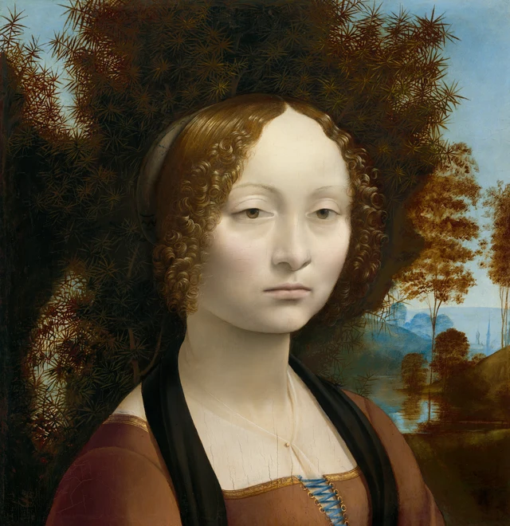
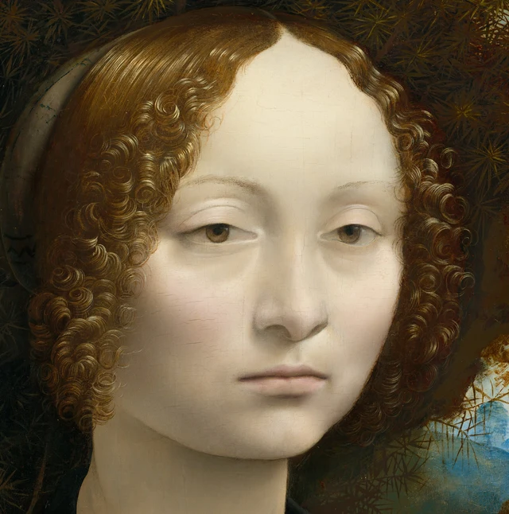
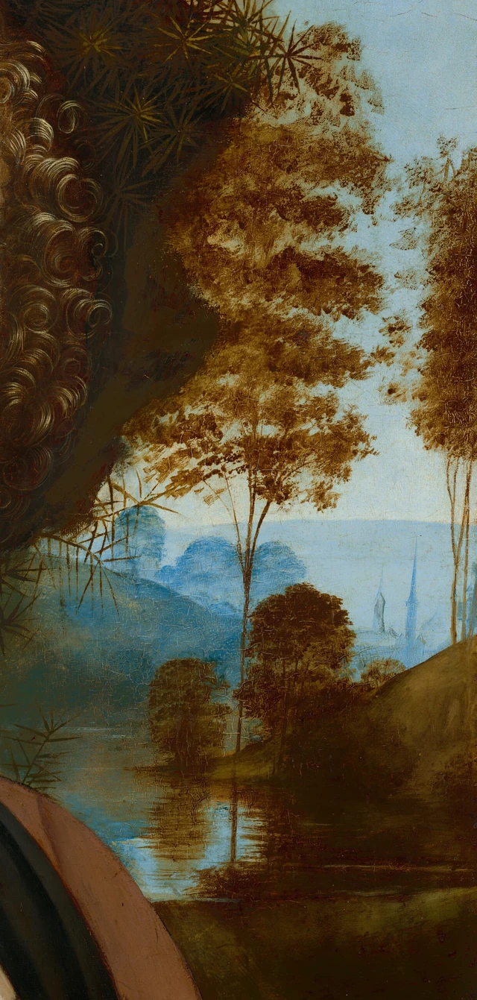
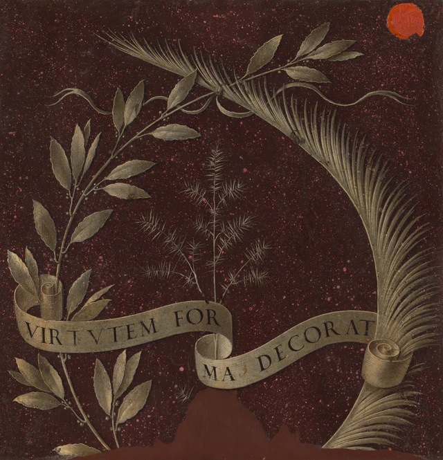
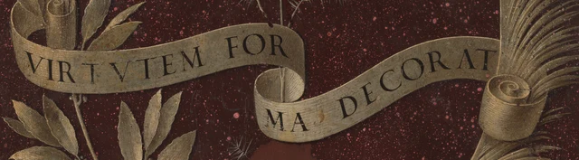

先看她的臉，再看緊貼著臉的東西。額頭是一片開闊的亮色，臉頰上的明暗慢慢相接；兩邊的髮捲卻不斷回旋，細小的亮線繞出一個又一個圈。再往外，植物的針葉向四面刺開。有些細節畫得像能逐根數出，有些地方則幾乎找不到明確的邊界。三種不同的畫法擠在一起，使這張不動的臉格外醒目。

她身後的杜松值得記住。翻到同一塊木板的反面，它會再次出現，大小、位置和作用都變了。本文想沿著這個變化看下去：一幅肖像怎樣既讓一個人的面貌來到眼前，又把她的名字和讚語組織成可讀的形象。面貌、姓名與讚辭由此相連，卻不能彼此取代。這是本文提出的讀法，並非關於達芬奇創作意圖的定論。
這幅畫作於約1474—1478年，屬於年輕達芬奇在佛羅倫薩的時期。十五世紀當地的女性肖像常用側面姿勢刻畫人物，這裡的臉卻向我們回轉。由側面轉向三分之四側面，變化不僅在姿勢，也在於怎樣使人感到一張臉的體積和存在。NGA作品導覽
面孔怎樣從針葉間顯出來
這張畫不到四十公分高。螢幕上的放大圖容易使我們把她想成真人大小；回到原作尺度，睫毛、嘴角和髮捲其實都只佔很小的位置。達芬奇沒有靠一個大幅度動作吸引我們。他把注意力放在這些細小的差別裡。
身體朝畫面右方斜轉，臉卻轉回來。我們看到的不是一張完全正對觀眾的臉：兩側眼睛和臉頰的展開不同，鼻子稍稍偏轉，下頜的暗影又把頭從頸部托出來。側面姿勢以清楚的外輪廓組織面貌；這裡的三分之四側面則讓面孔內部的起伏成為觀看的重點。額頭向太陽穴退去，鼻梁向眼窩轉暗，都需要靠明暗而非外緣交代。NGA作品導覽

看她鼻梁旁邊的灰色。它不是另貼上去的一條陰影，而是緩緩變深，再與眼窩接起來。嘴唇之間有較明確的暗線，下唇下面的陰影卻鬆軟許多。眼睛也並非由一圈同樣濃重的線勾成：上眼瞼較清楚，下方的界限輕得多。一個器官內部，清晰程度也在變化。所謂細膩，在這裡包括知道哪些邊界應當減弱。
髮捲做了另一件事。亮線在暗棕色裡繞行，時而聚攏，時而散開；有些髮絲離開大捲，輕輕伸到臉邊。背景針葉同樣繁密，卻反覆把方向拉向外側。捲曲與放射相鄰，才使臉頰那片較少紋理的亮面顯得更安靜。若只截取五官，人物仍然可辨，這種由周圍形狀產生的安靜卻會減弱。
她的嘴合攏著，嘴角沒有明顯上揚；眼瞼略覆瞳孔，目光朝我們這邊，卻很難說正在與誰對視。有人會感到疏遠，也有人會覺得沉著。這些感受有可指認的起點，但畫面沒有交出一段可以驗證的內心獨白。我們能夠看清臉的結構，仍未必知道她此刻在想什麼。面貌的精確與心理的難以確定，竟能同時存在。
衣服也值得多看一眼。方領沿著金色窄邊展開，藍色系帶穿過一排小小的金環。胸前薄紗靠斜行的細線、輕微的明暗和一點金色固定物才顯出來。它們沒有珠寶堆疊的聲勢，卻絕不是「毫無裝飾」。粗看時近乎平靜的衣著，細看仍有材料與手工的層次；人物的具體感也從這裡長出來。
右邊還留著一個世界
杜松佔據了頭部周圍的大部分空間，暗得像把面孔包住。但它並沒有封死整張畫。視線從右側髮捲繞出去，會遇到樹幹、水面，再遇到越來越淺的藍色形體。

近樹的細幹在水裡繼續向下，倒影又被一筆筆橫向的亮紋截斷。岸坡斜著升起，遠處幾處尖形建築從藍灰色中露出來。它們很小，仍足以使空間不止停在樹後。眼睛經過幾道遮擋，逐漸從可以辨認枝葉的近處，走到只能辨認大致形狀的遠處。
這裡沒有人物正在趕路，也沒有故事在風景裡接著演。它的作用更接近一次呼吸：臉被暗色襯得很近，世界卻還能向後展開。人和環境有了不同的距離與清晰度。我們不必把每座塔認出來，就能感到她並非懸在一塊沒有空間的底色上。
眼前的褐色樹葉很容易讓人想到秋天，淺色臉龐也容易引來病弱或憂鬱的猜測。但這些顏色已經有自己的歷史。技術研究發現，中景樹木與坡地所用的含銅綠色顏料已經褐變；面部的紅色澱也有褪色。今天的顏色是觀看的真實起點，卻不能直接等同於十五世紀的初始效果，更不足以單獨診斷一個人的健康或心情。顏料與底層研究；顏色變化研究
同一項技術研究還顯示，杜松與天空的交界經過調整：一些枝葉被後畫的天空收窄，另一些又伸到天空之上。那個看似自然長成的樹叢，實際上經過了繪畫中的安排。再看正面，它既是有針葉、有層次的植物，也是一片決定臉怎樣顯現、遠景從哪裡打開的形狀。
翻過去 杜松有了另一種位置

人不見了。正面那塊連續的亮色消失，換成深紅色的斑點底，植物則一枝枝分開。左邊較寬的葉片沿枝條展開，右邊細長的葉片密密排開；兩枝在上方交叉，像圍出一處位置。居中的杜松相對纖細，針葉幾乎能一簇簇讀下去。
這塊背景通常被解釋為仿紅色斑岩的紋樣。它沒有正面的天空和水面，也不帶我們繼續走向遠方。葉枝在一塊仿石材的表面前展開，整個安排接近一種徽識。即使暫時不知道它們象徵什麼，也能看出觀看方式已經改變：正面的植物圍住一個人，反面的植物本身成為要辨認的中心。2001年展覽圖錄
杜松的意大利語是ginepro，與Ginevra的名字相呼應。作品中的植物線索與早期文獻共同支持人物身份的確認，而非畫上寫著她的全名。這位佛羅倫薩女子生於1457年，1474年與路易吉·尼科利尼結婚，當時十六歲。婚姻紀念因此是一條重要解釋路徑，但不是已經排除其他可能的委託結論。NGA館藏說明；2001年圖錄條目16
知道這個名字的關聯，再回看正面，杜松就不再只是好看的背景。然而，它原來在畫裡做的事並未消失：它仍然遮擋、襯暗，仍把針葉伸向藍天。正面讓姓名暗示住進環境，反面則把它抽出來，放在枝葉圍合的中央。同一種植物，既可以參與一個人所處的空間，也可以替她作一種稱名。
這並不是從「純自然」走到「純符號」。正面的環境已經包含名字，反面的徽識也仍是被仔細畫出的植物。區別在於安排：一面讓我們先遇見面孔，再認出暗示；另一面讓那些暗示集中起來，準備說出一段對她的評價。
一句讚語怎樣成為畫面
卷帶上寫著VIRTVTEM FOR / MA DECORAT；連起來的通常拼寫是VIRTUTEM FORMA DECORAT，可以譯作「美裝點德性」。這裡「美」是主語，「德性」是被裝點的對象。它沒有說美貌本身足以證明德性，卻把外在的美與應受稱讚的內在品質安排在同一句話裡。

這句話並非像現代展簽一樣平貼在旁邊。卷帶從左側伸出，在中間折回，另一段向右上升，字母跟著弧度移動。為了讀完FORMA，我們必須從上一段末尾接到下一段開頭。眼睛在讀意義，也在追隨一件東西的起伏。帶子的內側轉暗，卷端顯出薄薄的層次；平面的字母因此被放進了一個小小的立體動作裡。
兩側的月桂與棕櫚，在館方的解釋中與智性和道德德性有關，也見於威尼斯外交官貝爾納多·本博的個人徽識。更具體的線索藏在現行銘文下面：紅外檢查發現了與本博相關的「德性與榮譽」箴言。因此，他很可能委託了反面的繪製；是否也委託正面，仍未證實。反面研究說明
本博與吉內薇拉的關係通常放在人文主義的詩文禮讚與精神愛慕中討論。這使背面更像一個有交往背景的讚美，而不是抽象的植物裝飾。婚姻紀念與友人的禮讚也未必只能二選一：研究中存在正反面分階段完成的方案，只是這仍是一種解釋，不能把缺少的委託契約補出來。詩文交往同樣不足以證明一段具體的肉體戀情。2001年圖錄討論
這樣再看「美裝點德性」，就能聽見其中社會性的聲音：這是一句怎樣稱讚她的話，也是把她的美安放到可被認可的品格之中的方式。我們可以追問，這種讚語突出什麼，又留下什麼。但不能直接把它當作她本人說出的自我介紹，也不能僅憑這句話確定她是否認同其中的價值。
不妨保留正反面之間的距離。反面給出名字的暗示、德性的標誌和一句有秩序的讚辭；正面卻仍是一張微微轉向、嘴唇閉合、明暗柔緩的具體面孔。讚辭使我們知道當時有人可以怎樣談論她，面孔讓我們繼續看一個不能被這句話全部代替的人。兩面都是經過經營的形象，卻用不同方式把她留了下來。
回到被截住的下緣
現在再看兩幅全圖的底邊。正面截過衣服和系帶，反面的枝條也在下方中斷，中央還有一片不規則的棕色區域。這件作品的下部已經被裁去。今天近乎方形、緊緊靠近面孔的構圖，包含了這一物質變化的後果，不能全當作達芬奇最初選定的距離。
失去的部分或許畫有雙手。常見的復原方案把一張達芬奇手部習作與它聯繫起來；但收藏該素描的英國皇家收藏目前將它定為約1490年，認為風格晚於這幅肖像，並提出它可能與《抱銀貂女子》的早期構思有關。紙上是對雙手交疊姿態的兩次探索，並非已經確定了上下位置的一套完整雙手。原畫遭到裁切有據，某一張重構圖準確找回了手的位置與持物，卻是另一回事。皇家收藏RCIN 912558
知道這一點，想像可以更有分寸。若原作曾包含手，面孔與手勢之間會有今天看不到的關係；我們卻不能任選一朵花，替這個失去的動作寫完含義。館方另列的42.7×37公分，是包含底邊後加木條的尺寸，也不是被裁之前的原始高度。反面右上紅蠟印則來自後世收藏史，與1733年的列支敦士登收藏記錄相關；它不屬於達芬奇的植物和銘文設計。尺寸與收藏史
這些變化沒有取消今天的觀看，反而使我們更清楚自己在面對什麼：一件既有圖像安排，也經歷過裁切、顏色變化和收藏流轉的物件。它給我們的接近是真實的，只不是完整無缺地回到十五世紀。
最後可以把正反兩面交替看一次。螢幕允許並列它們，同一塊木板本身卻要轉過去，才看見另一面。當面孔暫時退場，我們記著它讀那句讚語；再回到面孔，植物已經帶上名字的意味，嘴角和目光卻沒有因此變得更容易解釋。
這正是這幅小畫使人願意反覆回看的地方。杜松把面貌、姓名與讚美連起來，卻沒有把它們壓成一個答案。我們獲得了更多認識，仍需要再看那一張臉。她的具體性，不只來自畫像像不像某個人，也來自那些每次回看仍有差別、仍值得停留的繪畫關係。
可選閱讀 用SAE再看兩面的往返
前面的細讀可以到此結束。以下借SAE（Self-as-an-End）美學，把剛才的觀看再推進一步。SAE把個人被什麼打動，與判斷中能夠共同承認的根據區分開；「射線」是追問的方向，並非給作品分類或排等級。這裡最有幫助的，是先分辨眼前呈現的東西，再察看記憶怎樣進入下一次觀看。SAE美學總論
先暫時放下「杜松」「德性」「吉內薇拉」這些名稱，只看圖2。臉頰的明暗如何相接，亮線怎樣盤成髮捲，針葉又怎樣向外伸出？我們仍能感到三種不同的形狀，即使尚未拿它們去識別身份、猜測性格。SAE的感知方向提醒我們，眼前呈現有其自身的樣子，不必先證明有用或令人愉快，才值得停留。這裡也可以檢驗自己的說法：若覺得臉「冷」，究竟在指色調、邊緣和表情，還是已經把某種性格帶進來了？感知之美
接著只看反面，過一會兒再回到正面。已經學到的ginepro與Ginevra之間的關聯，會不會使目光更早落到樹叢上？如果會，先前學到的東西就在下一次觀看裡起了作用。但它帶來的期待也可能落空：我們以為一旦讀懂徽識，就能看懂她的表情，回到臉上卻發現仍然無法確定。記住的東西伸向眼前，眼前的細節又促使我們修正期待，這才是此處可以沿認知方向繼續看的關係；多記住一條典故本身還不是結論。認知之美
同樣，知道顏料褪變與下部裁切之後，當前形象會帶著過去來到我們面前。SAE的因果方向關心的，是發生過的事怎樣留在後來的東西裡；它並不要求我們喜歡破損，也不把年代久遠自動算成美。可以具體問：哪一處截斷讓我們意識到失去的部分？哪一種現在的顏色需要研究來解釋，而不是憑眼睛猜出歷史？因果之美
這些問題都返回同一件作品，卻各有落點：眼前的面孔怎樣顯現，記住的徽識怎樣改變下一眼，作品的過去又怎樣留在當前形象裡。理論的幫助，在於把這幾種關係分清，使我們能夠指出自己此刻在看什麼、憑什麼作出判斷，然後帶著更具體的問題回到畫上。
圖像與資料說明
本文依據美國國家美術館正面3971×4096像素、反面3942×4096像素的官方圖像進行獨立視覺描述。兩張全圖保持下載檔案原樣；三個局部僅按像素坐標裁切，未調色、銳化、修復、補繪或生成內容。數位複製品的顯示條件與原作觀看不同。
兩張藏品圖像適用館方CC0開放政策。開放圖像許可不意味著研究文章、技術圖或現代重構也採用相同許可。本包不包含源典PDF或重構圖。史實與爭議依據文中連結資料；本文的觀看解釋不代表美術館背書。另見參考資料與影像來源及授權。